使用 Visual Studio Code 调试代码
Visual Studio Code 对各种类型的应用程序调试提供了丰富的支持。VS Code 内置了对 JavaScript、TypeScript 和 Node.js 调试的支持。Visual Studio Marketplace 提供了各种调试扩展，可为 VS Code 添加其他语言和运行时的调试支持。
本文介绍了 VS Code 的调试功能以及如何在 VS Code 中开始调试。你还将了解如何使用 VS Code 中的 Copilot 来加速调试配置的设置和启动调试会话。
以下视频展示了如何在 VS Code 中开始调试。
调试器用户界面
以下图示展示了调试器用户界面的主要组成部分：
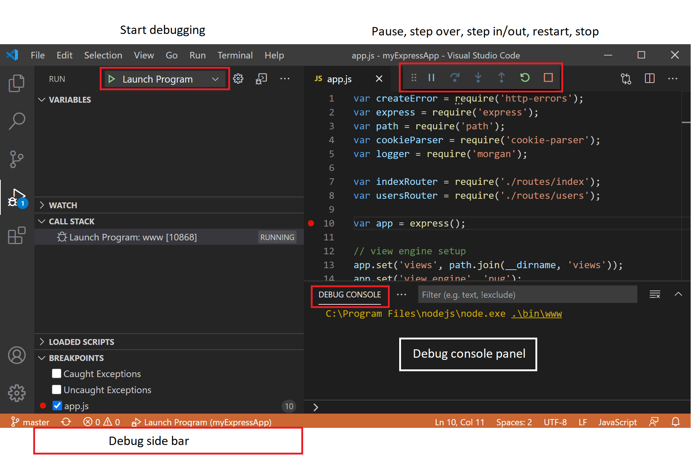
- "运行和调试"视图：显示与运行、调试以及管理调试配置设置相关的所有信息。
- 调试工具栏：包含最常用调试操作的按钮。
- 调试控制台：允许查看和交互调试器中运行的代码输出。
- 调试侧边栏：在调试会话期间，允许你与调用堆栈、断点、变量和监视变量进行交互。
- "运行"菜单：包含最常用的运行和调试命令。
开始调试之前
- 从 Visual Studio Marketplace 为你的语言或运行时安装调试扩展。
VS Code 内置了对 JavaScript、TypeScript 和 Node.js 调试的支持。
- 为你的项目定义调试配置。
对于简单的应用程序，VS Code 会尝试运行和调试当前活动文件。对于更复杂的应用程序或调试场景，你需要创建一个 launch.json 文件来指定调试器配置。有关创建调试配置的更多信息。
[!TIP]
VS Code 中的 Copilot 可以帮助你生成 launch.json 文件。有关更多信息，请参阅使用 Copilot 生成调试配置。
- 在代码中设置断点。
断点是一个标记，你可以将其设置在代码行上，以告诉调试器在执行到达该行时暂停执行。你可以通过单击编辑器中行号旁边的装订线来设置断点。
有关断点的更多信息，请参阅使用断点。
启动调试会话
要在 VS Code 中启动调试会话，请执行以下步骤：
- 打开包含要调试代码的文件。
- 使用
kb(workbench.action.debug.start)键启动调试会话，或在"运行和调试"视图 (workbench.view.debug) 中选择"运行和调试"。
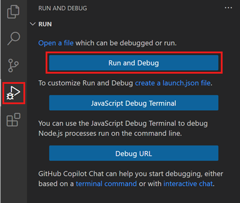
对于更复杂的调试场景，如附加到正在运行的进程，你需要创建一个 launch.json 文件来指定调试器配置。获取有关调试配置的更多信息。
- 从可用调试器列表中选择要使用的调试器。
VS Code 会尝试运行和调试当前活动文件。对于 Node.js，VS Code 会检查 package.json 文件中的 start 脚本以确定应用程序的入口点。
- 当调试会话开始时，将显示"调试控制台"面板并显示调试输出，状态栏颜色也会发生变化（默认颜色主题为橙色）。
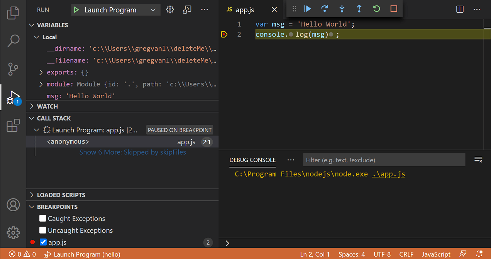
- 状态栏中的调试状态显示活动的调试配置。选择调试状态可以更改活动启动配置并开始调试，而无需打开"运行和调试"视图。
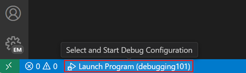
调试操作
一旦调试会话开始，调试工具栏就会出现在窗口顶部。工具栏包含用于控制调试会话流程的操作，例如单步执行代码、暂停执行和停止调试会话。

下表描述了调试工具栏中可用的操作：
| 操作 | 描述 | ||
|---|---|---|---|
| -------- | ------------- | ||
继续 / 暂停 kb(workbench.action.debug.continue) | 继续：恢复正常程序/脚本执行（直到下一个断点）。 暂停：检查当前行执行的代码并逐行调试。 | ||
逐过程 kb(workbench.action.debug.stepOver) | 将下一个方法作为单个命令执行，不检查或跟踪其组件步骤。 | ||
逐语句 kb(workbench.action.debug.stepInto) | 进入下一个方法以逐行跟踪其执行。 | ||
跳出 kb(workbench.action.debug.stepOut) | 在方法或子程序内部时，通过将当前方法的剩余行作为单个命令完成来返回到较早的执行上下文。 | ||
重启 kb(workbench.action.debug.restart) | 终止当前程序执行，并使用当前运行配置重新开始调试。 | ||
停止 kb(workbench.action.debug.stop) | 终止当前程序执行。 |
如果你的调试会话涉及多个目标（例如，客户端和服务器），调试工具栏会显示会话列表，并允许你在它们之间切换。
[!TIP]
使用setting(debug.toolBarLocation)设置来控制调试工具栏的位置。它可以是默认的floating（浮动）、docked（停靠）到"运行和调试"视图，或hidden（隐藏）。浮动调试工具栏可以水平拖动，也可以向下拖动到编辑器区域（距离顶部边缘有一定限制）。
断点
断点是一种特殊标记，可以在特定点暂停代码的执行，以便你检查应用程序在该点的状态。VS Code 支持多种类型的断点。
设置断点
要设置或取消断点，请在编辑器边距上单击，或在当前行上使用 kb(editor.debug.action.toggleBreakpoint)。
- 编辑器边距中的断点通常显示为红色的实心圆。
- 已禁用的断点具有灰色的实心圆。
- 当调试会话开始时，无法向调试器注册的断点会变为灰色的空心圆。如果在没有实时编辑支持的调试会话运行期间编辑了源代码，也可能发生同样的情况。
或者，可以通过启用 setting(debug.showBreakpointsInOverviewRuler) 设置，在编辑器的概述标尺中显示断点：
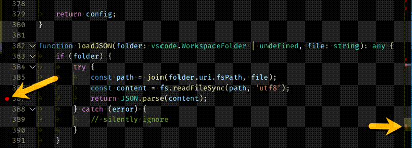
为了更好地控制断点，请使用"运行和调试"视图的"断点"部分。此部分列出了代码中的所有断点，并提供额外的操作来管理它们。
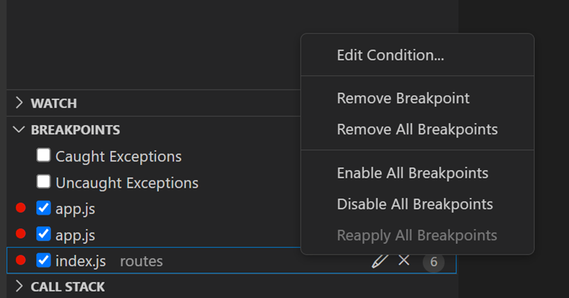
[!TIP]
如果你希望以树形视图查看断点，按文件分组，请将setting(debug.breakpointsView.presentation)设置配置为tree。
断点类型
条件断点
VS Code 强大的调试功能之一是可以基于表达式、命中次数或两者的组合来设置条件。
- 表达式条件：当表达式计算结果为
true时触发断点。 - 命中次数：命中次数控制在断点中断执行之前需要被命中的次数。命中次数是否被遵守，以及表达式的确切语法，可能因调试器扩展而异。
- 等待断点：当另一个断点被命中时激活该断点（触发断点）。
要添加条件断点：
- 创建条件断点
- 在编辑器边距中右键单击，然后选择"添加条件断点"。
- 在命令面板 (
kb(workbench.action.showCommands)) 中使用"添加条件断点"命令。
- 在命令面板 (
- 在编辑器边距中右键单击，然后选择"添加条件断点"。
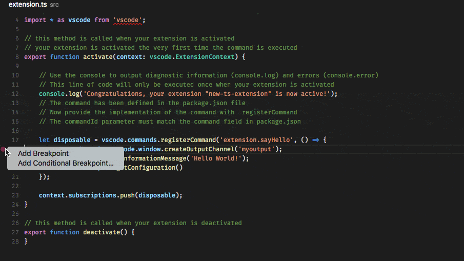
要向现有断点添加条件：
- 编辑现有断点
- 在编辑器边距中断点上右键单击，然后选择"编辑断点"。
- 在"运行和调试"视图的"断点"部分中，选择现有断点旁边的铅笔图标。
- 在编辑器边距中断点上右键单击，然后选择"编辑断点"。
如果调试器不支持条件断点，则"添加条件断点"和"编辑条件"操作不可用。
触发断点
触发断点是一种条件断点，当另一个断点被命中时启用。它们在诊断仅在满足某些前置条件后才会发生的代码故障情况时非常有用。
可以通过在字形边距上右键单击，选择"添加触发断点"，然后选择启用该断点的其他断点来设置触发断点。
内联断点
内联断点仅当执行到达与内联断点关联的列时才会触发。这在调试包含单个行中多个语句的精简代码时非常有用。
可以使用 kb(editor.debug.action.toggleInlineBreakpoint) 或在调试会话期间通过上下文菜单设置内联断点。内联断点在编辑器中以内联方式显示。
内联断点也可以有条件。可以通过编辑器左边距中的上下文菜单在单行上编辑多个断点。
函数断点
调试器可以支持通过指定函数名称来创建断点，而不是直接在源代码中放置断点。这在源代码不可用但函数名称已知的情况下非常有用。
要创建函数断点，请在"断点"部分标题中选择 + 按钮并输入函数名称。函数断点在"断点"部分中显示为红色三角形。
数据断点
如果调试器支持数据断点，可以从"变量"视图中的上下文菜单进行设置。"值更改时中断/读取时中断/访问时中断"命令添加一个数据断点，当底层变量的值更改/被读取/被访问时触发。数据断点在"断点"部分中显示为红色六边形。
日志点
日志点是断点的一种变体，它不会中断调试器，而是将消息记录到调试控制台。日志点可以帮助你节省时间，而无需在代码中添加或删除日志语句。
日志点由菱形图标表示。日志消息是纯文本，但也可以包含要在花括号 ('{}') 中计算的表达式。
要添加日志点，请在编辑器左边距中右键单击并选择"添加日志点"，或在命令面板 (kb(workbench.action.showCommands)) 中使用"调试: 添加日志点..."命令。你还可以配置 setting(debug.gutterMiddleClickAction) 设置，以在编辑器装订线中按下鼠标中键时切换日志点。
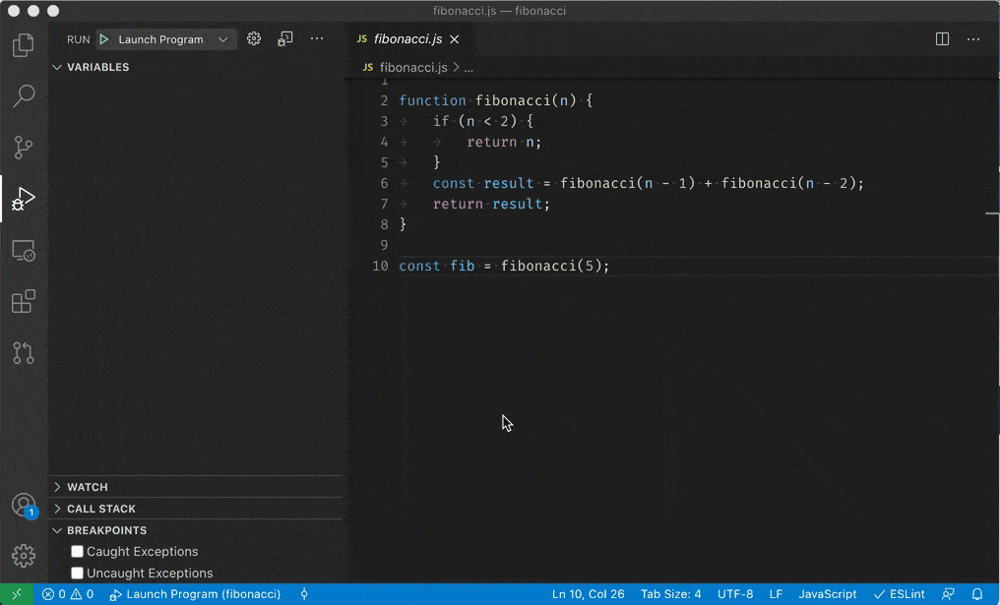
与常规断点一样，日志点可以启用或禁用，也可以由条件和/或命中次数控制。
[!NOTE]
调试器扩展可以选择是否实现日志点。
数据检查
"运行和调试"视图
在调试会话期间，你可以在"运行和调试"视图的"变量"部分中检查变量和表达式，或者将鼠标悬停在编辑器中的源代码上。变量值和表达式计算结果相对于"调用堆栈"部分中所选的堆栈帧。
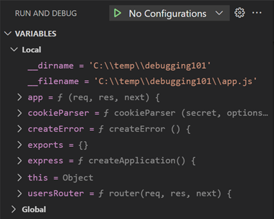
要在调试会话期间更改变量的值，请在"变量"部分中右键单击该变量，然后选择"设置值" (kb(debug.setVariable))。
此外，你可以使用"复制值"操作复制变量的值，或使用"复制为表达式"操作复制一个用于访问该变量的表达式。然后，你可以在"监视"部分中使用此表达式。
变量和表达式也可以在"运行和调试"视图的"监视"部分中进行计算和监视。
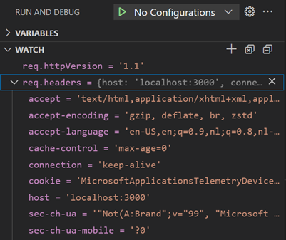
要按名称或值筛选变量，请在焦点位于"变量"部分时使用 kb(list.find) 键盘快捷键，然后输入搜索词。
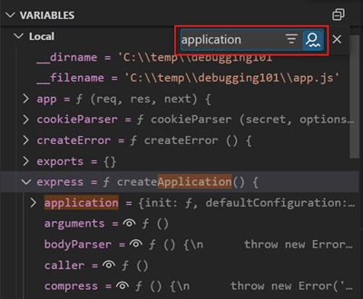
调试控制台 REPL
可以使用调试控制台 REPL（读取-求值-打印循环）功能对表达式进行求值。要打开调试控制台，请使用调试窗格顶部的"调试控制台"操作，或使用"视图: 调试控制台"命令 (kb(workbench.debug.action.toggleRepl))。
表达式在按下 kbstyle(Enter) 后进行求值，调试控制台 REPL 在你键入时会显示建议。如果需要输入多行，请在行之间使用 kbstyle(Shift+Enter)，然后使用 kbstyle(Enter) 发送所有行进行求值。
调试控制台输入使用活动编辑器的模式，这意味着调试控制台输入支持语法着色、缩进、引号自动补全和其他语言功能。
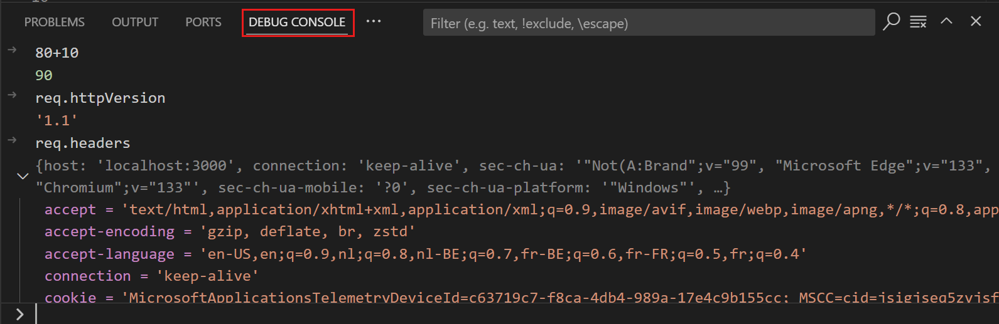
[!NOTE]
你必须处于活动的调试会话中才能使用调试控制台 REPL。
多目标调试
对于涉及多个进程的复杂场景（例如，客户端和服务器），VS Code 支持多目标调试。在启动第一个调试会话后，你可以启动另一个调试会话。一旦第二个会话启动并运行，VS Code 用户界面将切换到_多目标模式_：
- 各个会话现在在"调用堆栈"视图中显示为顶级元素。
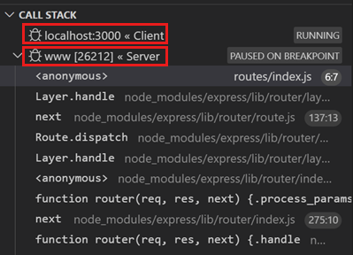
- 调试工具栏显示当前活动会话（所有其他会话可在下拉菜单中找到）。
- 调试操作（例如，调试工具栏中的所有操作）在活动会话上执行。可以通过使用调试工具栏中的下拉菜单或选择"调用堆栈"视图中的不同元素来更改活动会话。
远程调试
VS Code 不支持跨所有语言的内置远程调试。远程调试是你正在使用的调试扩展的功能，你应该查阅 Marketplace 中扩展的页面以获取支持信息和详细信息。
但是，有一个例外：VS Code 中包含的 Node.js 调试器支持远程调试。有关更多信息，请参阅 Node.js 调试。
调试器扩展
VS Code 内置了对 Node.js 运行时的调试支持，可以调试 JavaScript、TypeScript 或任何其他转译为 JavaScript 的语言。
对于调试其他语言和运行时（包括 PHP、Ruby、Go、C#、Python、C++、PowerShell 和许多其他语言），请在 Visual Studio Marketplace 中查找 Debuggers 扩展，或在顶级"运行"菜单中选择"安装其他调试器"。
以下是几个包含调试支持的热门扩展：
后续步骤
要了解 VS Code 的 Node.js 调试支持，请查看：
- Node.js - 描述 VS Code 中包含的 Node.js 调试器。
- TypeScript - Node.js 调试器也支持 TypeScript 调试。
要查看有关调试基础知识的教程，请观看此视频：
- Getting started with debugging in VS Code - 了解 VS Code 中的调试。
要了解有关 VS Code 中 Copilot 和 AI 辅助调试的更多信息：
要了解通过 VS Code 扩展为其他编程语言提供的调试支持：
要了解 VS Code 的任务运行支持，请访问：
- 任务 - 描述如何使用 Gulp、Grunt 和 Jake 运行任务以及如何显示错误和警告。
要编写自己的调试器扩展，请访问：
- 调试器扩展 - 使用模拟示例说明创建 VS Code 调试扩展所需的步骤。
常见问题
支持哪些调试场景？
VS Code 在 Linux、macOS 和 Windows 上开箱即用地支持基于 Node.js 的应用程序调试。许多其他场景由 Marketplace 中提供的 VS Code 扩展支持。